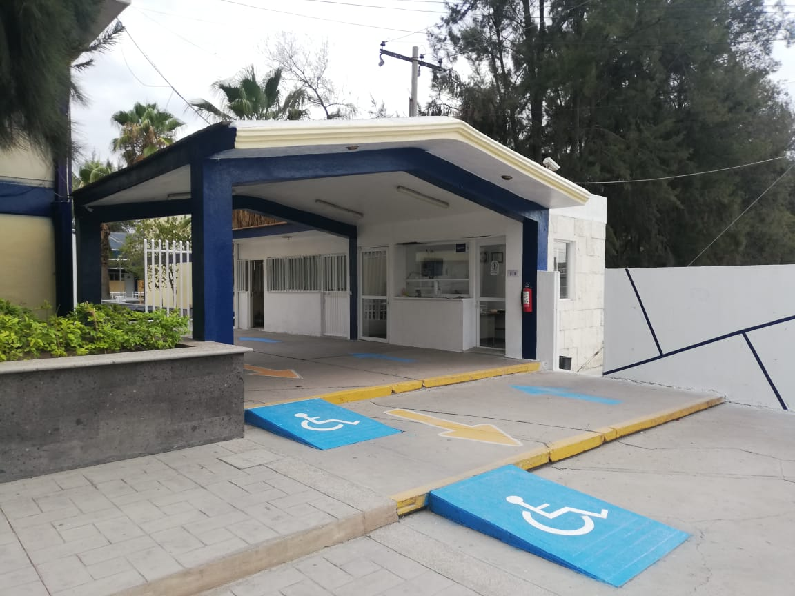

El sistema de educación tecnológica inició en México con la creación de la Escuela Nacional de Artes y Oficios para Varones en 1867; posteriormente en la década de 1930 se buscó estructurar un sistema de enseñanza técnica, creando así la preparatoria técnica. Para 1968 arrancaron los Centros de Estudios Tecnológicos para la formación profesional a nivel medio superior (CECyT y CETis antecedente del bachillerato tecnológico que imparte actualmente la Dirección General de Educación Tecnológica Industrial - DGETI), buscando dotar a los estudiantes de habilidades, competencias y capacidades técnicas y tecnológicas propias de algún oficio o profesión, creadas para satisfacer la necesidad de técnicos profesionales para ocupar mandos intermedios en el ámbito laboral. Este tipo de formación es terminal, donde el egresado obtiene una cédula profesional para incorporarse al mercado laboral. El CETis No. 80 es fundado un 1° de Octubre de 1981 bajo el techo de la primaria Independencia por unos meses, y posteriormente fueron reubicados a las instalaciones de la primaria Osornio Camarena, ubicado en la calle Decreto de 1960 esquina con Av. Héroe de Nacozari.
El nacimiento de nuestra prestigiada institución fue dirigida con gran actitud y muchas expectativas, por el Ing. Martín Sánchez Durón como Director y el Ing. Miguel Angel Escobedo Medrano como subdirector, acompañados de 3 Jefes de Departamento, 15 Docentes y 5 Administrativos, para dar atención a 206 alumnos en las especialidades de “Control de Calidad”, “Gerencia y Supervisión en la industria del vestido” así como “Seguridad Industrial”. Cuando la Secretaría de Educación Pública establece la creación de los Bachilleratos Bivalentes, surge la propuesta de los planteles CBTis (Centro Bachillerato Tecnológico industrial y de servicios), donde se pretendía seguir conservando el título de Técnicos profesionales, y además agregar la posibilidad de obtener un certificado de nivel Bachillerato, con el objetivo de poder continuar con los estudios a nivel superior y subsecuentes. Con esta premisa, todos los bachilleratos de educación tecnológica, deberían de cambiar de modalidad a este esquema, por lo que en Julio de 1982 se hizo la promesa por parte de gobierno federal, de construir el plantel CETIS No. 80 en terrenos del Fraccionamiento Colinas de Rio (hoy CBTis No. 168), pero por razones de índole político-social, se iniciaron las labores de construcción en la calle General Luis Moya en el Fraccionamiento Insurgentes, ubicación actual del plantel. En Julio de 1983 se inauguran las nuevas instalaciones prometidas, dando comienzo a los cimientos de una gran Institución, que ha crecido pese a las adversidades, convirtiéndolo en un plantel de excelencia. Cabe mencionar que el Fraccionamiento Insurgentes que también se le conoce como “Las Huertas”, su formación en 1977 se inició con la urbanización de los terrenos pertenecientes al Ejido las Huertas, dando lugar a la creación de un complejo educativo consistente en todos los niveles, desde jardín de niños hasta nivel superior. Ahora bien, se preguntarán ¿Porqué que no se cambió el plantel al nombre CBTis No. 80., la respuesta es muy sencilla, en el registro de las instituciones educativas no puede haber duplicidad de claves de centro de trabajo (CCT), y en los nombres no se permiten cambios, además ya existía uno con este nombre en el estado de Yucatán. Es importante recalcar que si se hubiera cambiado el nombre, perdería la identidad del número 80 con el que ya se conocía desde su reciente fundación, y probablemente el prestigio logrado, por lo que se quedó con el nombre del CETis No. 80. Esta gran historia se ha ido tejiendo con grandes momentos de éxito, gracias al gran trabajo colaborativo de todo el personal involucrado, con el comienzo de los fundadores, y la continuidad los activos, para que ésta bella historia siga siendo un libro abierto. Es el único de los planteles del estado de Aguascalientes que ha obtenido la mención de Plantel de Excelencia.